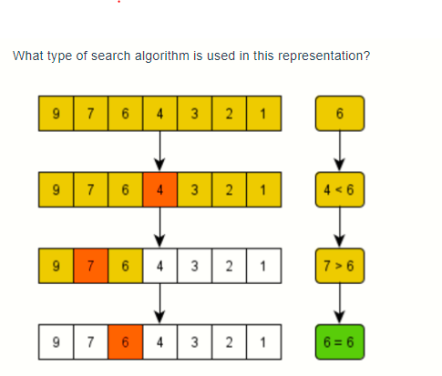

{% embed url=“https://www.youtube.com/watch?v=OQig62–r6w” %}
{% page-ref page=“../../abstract-data-structures/untitled-1/untitled-6/recursion-explained/” %}
{% page-ref page=“../../abstract-data-structures/untitled-1/untitled-6/recursion-explained/recursion-examples.md” %}
{% embed url=“https://gist.github.com/bgoonz/f1aa6200c2acad7abb38261c76ef7efa” %}
{% embed url=“https://gist.github.com/bgoonz/debbe502eb068371b1ee5a52d657c993#file-searching-and-recursion-ipynb” %}
Logarithms are a way of looking differently at exponentials. I know that this is a bit of a vague definition, so let’s look at an example:
What does the mathematical expression above mean? It’s an abbreviation for the following expression:
What we are looking at above is two different ways to express an object that doubles in size with each iteration.
Another way to think about 2^5 = 32 is that 2 is the “growth rate” and 5 is the number of times you went through the growth (doubling). 32 is the final result.
Let’s look at a few more expressions:
Now, to begin looking at logarithms, let’s rewrite the exponential expressions above in logarithmic form.
Notice how we have essentially just moved around different pieces of the expression.
For our first expression,
2 was the “growth rate”, 5 was the “time” spent growing, and 32 was where we ended up. When we rewrite this logarithmically, we have
In this case, 2 still represents the “growth rate” and 32 still represents where we end up. The 5 also still represents the “time” spent growing.
So, the difference between when we would use a logarithm and when we use exponentiation depends on what factors we know ahead of time. If you know the growth rate and you know how long you are growing, you can use exponentiation (2^5) to figure out where you end up (32). However, if you know the growth rate and where you end up but do not know the time spent growing, you can use a logarithm (log_2 32) to figure that out.
Logarithms have an inverse relationship with exponents, just like division and multiplication have an inverse relationship.
For example, if you know that you have one group of 5 items and you want to identify the total you would have if you had 4 of those groups instead of just one, you could express that with 5 * 4 = 20. However, if you knew that you had a total of 20 items and you wanted to know how many groups of 5 you could make out your total, you could express that with 20 \ 5 = 4.
In computer science, you often ask questions like “How many times must n be divided in half before we get to one?” or “How many times will we halve this collection before the collection has only one item?” To answer these questions, you can use logarithms! Halving is like doubling, so we can say that log_2 n would give us the answer we’re seeking.
You will see this come up when analyzing the time complexity of specific algorithms. Any algorithm that doubles or halves a number or collection on each iteration of a loop is likely to have O(log n) time complexity. You will see this come up specifically when we talk about binary search and its time complexity. You will also see this come up in specific sorting algorithms (like merge sort). In simple terms, merge sort divides a collection in half and then merges the sorted halves. The fact that the algorithm repeatedly halves something is your clue that it includes a logarithm in its time complexity. One last place you’re likely to see logarithms come up is with a perfect binary tree. One property of these binary trees is that the number of nodes doubles at each level.
Write a logarithmic expression that is identical to this exponential expression:
Write an exponential expression that is identical to this logarithmic expression:
What keywords should you look out for that might alert you that logarithms are involved?

Imagine that I’ve chosen a random number from 1 to 20. Then, you must guess the number. One approach would be to start picking at 1 and increment your guess by 1 with each guess. If the computer randomly selected 20, then it would take you 20 guesses to get the correct answer. If the computer guessed 1, then you would have the right answer on your very first guess. On average, you will get the correct answer on the 10th or 11th guess.
If the collection we are searching through is random and unsorted, linear search is the most efficient way to search through it. Once we have a sorted list, then there are more efficient approaches to use.
We want to write a simple program to conduct a linear search on a collection of data. Let’s write a function that takes a list (arr) and an integer (target) as its input and returns the integer idx where the target is found. If the target does not exist in the arr, then the function should return -1.
def linear_search(arr, target):
# loop through each item in the input array
for idx in range(len(arr)):
# check if the item at the current index is equal to the target
if arr[idx] == target:
# return the current index as the match
return idx
# if we were able to loop through the entire array, the target is not present
return -1{% embed url=“https://replit.com/@bgoonz/cs-unit-1-sprint-2-module-4-linear-search-2” %}
The word recursion comes from the Latin word recurrere, meaning to run or hasten back, return, revert, or recur. Here are some online definitions of recursion:
A recursive definition is one in which the defined term appears in the definition itself. Self-referential situations often crop up in real life, even if they aren’t immediately recognizable as such. For example, suppose you wanted to describe the set of people that make up your ancestors. You could describe them this way:
Notice how the concept that is being defined, ancestors, shows up in its own definition. This is a recursive definition.
In programming, recursion has a very precise meaning. It refers to a coding technique in which a function calls itself.
Most programming problems are solvable without recursion. So, strictly speaking, recursion usually isn’t necessary.
However, some situations particularly lend themselves to a self-referential definition—for example, the definition of ancestors shown above. If you were devising an algorithm to handle such a case programmatically, a recursive solution would likely be cleaner and more concise.
Traversal of tree-like data structures is another good example. Because these are nested structures, they readily fit a recursive definition. A non-recursive algorithm to walk through a nested structure is likely to be somewhat clunky, while a recursive solution will be relatively elegant. An example of this appears later in this tutorial.
On the other hand, recursion isn’t for every situation. Here are some other factors to consider:
Typically, the readability of the code will be the biggest determining factor. But it depends on the circumstances. The examples presented below should help you get a feel for when you should choose recursion.
When you call a function in Python, the interpreter creates a new local namespace so that names defined within that function don’t collide with identical names defined elsewhere. One function can call another, and even if they both define objects with the same name, it all works out fine because those objects exist in separate namespaces.
The same holds true if multiple instances of the same function are running concurrently. For example, consider the following definition:
When function() executes the first time, Python creates a namespace and assigns x the value 10 in that namespace. Then function() calls itself recursively. The second time function() runs, the interpreter creates a second namespace and assigns 10 to x there as well. These two instances of the name x are distinct from each another and can coexist without clashing because they are in separate namespaces.
Unfortunately, running function() as it stands produces a result that is less than inspiring, as the following traceback shows:>>>
>>> function()
Traceback (most recent call last):
File "<stdin>", line 1, in <module>
File "<stdin>", line 3, in function
File "<stdin>", line 3, in function
File "<stdin>", line 3, in function
[Previous line repeated 996 more times]
RecursionError: maximum recursion depth exceededAs written, function() would in theory go on forever, calling itself over and over without any of the calls ever returning. In practice, of course, nothing is truly forever. Your computer only has so much memory, and it would run out eventually.
Python doesn’t allow that to happen. The interpreter limits the maximum number of times a function can call itself recursively, and when it reaches that limit, it raises a RecursionError exception, as you see above.
Technical note: You can find out what Python’s recursion limit is with a function from the sys module called getrecursionlimit():>>>
>>> from sys import getrecursionlimit
>>> getrecursionlimit()
1000You can change it, too, with setrecursionlimit():>>>
>>> from sys import setrecursionlimit
>>> setrecursionlimit(2000)
>>> getrecursionlimit()
2000You can set it to be pretty large, but you can’t make it infinite.
There isn’t much use for a function to indiscriminately call itself recursively without end. It’s reminiscent of the instructions that you sometimes find on shampoo bottles: “Lather, rinse, repeat.” If you were to follow these instructions literally, you’d shampoo your hair forever!
This logical flaw has evidently occurred to some shampoo manufacturers, because some shampoo bottles instead say “Lather, rinse, repeat as necessary.” That provides a termination condition to the instructions. Presumably, you’ll eventually feel your hair is sufficiently clean to consider additional repetitions unnecessary. Shampooing can then stop.
Similarly, a function that calls itself recursively must have a plan to eventually stop. Recursive functions typically follow this pattern:
You’re now ready to see how this works with some examples.
The first example is a function called countdown(), which takes a positive number as an argument and prints the numbers from the specified argument down to zero:>>>
>>> def countdown(n):
... print(n)
... if n == 0:
... return # Terminate recursion
... else:
... countdown(n - 1) # Recursive call
...
>>> countdown(5)
5
4
3
2
1
0Notice how countdown() fits the paradigm for a recursive algorithm described above:
n is zero, at which point recursion stops.n, so each recursion moves closer to the base case.Note: For simplicity, countdown() doesn’t check its argument for validity. If n is either a non-integer or negative, you’ll get a RecursionError exception because the base case is never reached.
The version of countdown() shown above clearly highlights the base case and the recursive call, but there’s a more concise way to express it:
Here’s one possible non-recursive implementation for comparison:>>>
This is a case where the non-recursive solution is at least as clear and intuitive as the recursive one, and probably more so.
The next example involves the mathematical concept of factorial. The factorial of a positive integer n, denoted as n!, is defined as follows:
In other words, n! is the product of all integers from 1 to n, inclusive.
Factorial so lends itself to recursive definition that programming texts nearly always include it as one of the first examples. You can express the definition of n! recursively like this:
As with the example shown above, there are base cases that are solvable without recursion. The more complicated cases are reductive, meaning that they reduce to one of the base cases:
For example, recursive computation of 4! looks like this: Recursive Calculation of 4!
Recursive Calculation of 4!
The calculations of 4!, 3!, and 2! suspend until the algorithm reaches the base case where n = 1. At that point, 1! is computable without further recursion, and the deferred calculations run to completion.
Here’s a recursive Python function to calculate factorial. Note how concise it is and how well it mirrors the definition shown above:>>>
A little embellishment of this function with some print() statements gives a clearer idea of the call and return sequence:>>>
>>> def factorial(n):
... print(f"factorial() called with n = {n}")
... return_value = 1 if n <= 1 else n * factorial(n -1)
... print(f"-> factorial({n}) returns {return_value}")
... return return_value
...
>>> factorial(4)
factorial() called with n = 4
factorial() called with n = 3
factorial() called with n = 2
factorial() called with n = 1
-> factorial(1) returns 1
-> factorial(2) returns 2
-> factorial(3) returns 6
-> factorial(4) returns 24
24Notice how all the recursive calls stack up. The function gets called with n = 4, 3, 2, and 1 in succession before any of the calls return. Finally, when n is 1, the problem can be solved without any more recursion. Then each of the stacked-up recursive calls unwinds back out, returning 1, 2, 6, and finally 24 from the outermost call.
Recursion isn’t necessary here. You could implement factorial() iteratively using a for loop:>>>
>>> def factorial(n):
... return_value = 1
... for i in range(2, n + 1):
... return_value *= i
... return return_value
...
>>> factorial(4)
24You can also implement factorial using Python’s reduce(), which you can import from the functools module:>>>
>>> from functools import reduce
>>> def factorial(n):
... return reduce(lambda x, y: x * y, range(1, n + 1) or [1])
...
>>> factorial(4)
24Again, this shows that if a problem is solvable with recursion, there will also likely be several viable non-recursive solutions as well. You’ll typically choose based on which one results in the most readable and intuitive code.
Another factor to take into consideration is execution speed. There can be significant performance differences between recursive and non-recursive solutions. In the next section, you’ll explore these differences a little further.
To evaluate execution time, you can use a function called timeit() from a module that is also called timeit. This function supports a number of different formats, but you’ll use the following format in this tutorial:
timeit(<command>, setup=<setup_string>, number=<iterations>)timeit() first executes the commands contained in the specified <setup_string>. Then it executes <command> the given number of <iterations> and reports the cumulative execution time in seconds:>>>
>>> from timeit import timeit
>>> timeit("print(string)", setup="string='foobar'", number=100)
foobar
foobar
foobar
.
. [100 repetitions]
.
foobar
0.03347089999988384Here, the setup parameter assigns string the value 'foobar'. Then timeit() prints string one hundred times. The total execution time is just over 3/100 of a second.
The examples shown below use timeit() to compare the recursive, iterative, and reduce() implementations of factorial from above. In each case, setup_string contains a setup string that defines the relevant factorial() function. timeit() then executes factorial(4) a total of ten million times and reports the aggregate execution.
First, here’s the recursive version:>>>
>>> setup_string = """
... print("Recursive:")
... def factorial(n):
... return 1 if n <= 1 else n * factorial(n - 1)
... """
>>> from timeit import timeit
>>> timeit("factorial(4)", setup=setup_string, number=10000000)
Recursive:
4.957105500000125Next up is the iterative implementation:>>>
>>> setup_string = """
... print("Iterative:")
... def factorial(n):
... return_value = 1
... for i in range(2, n + 1):
... return_value *= i
... return return_value
... """
>>> from timeit import timeit
>>> timeit("factorial(4)", setup=setup_string, number=10000000)
Iterative:
3.733752099999947Last, here’s the version that uses reduce():>>>
>>> setup_string = """
... from functools import reduce
... print("reduce():")
... def factorial(n):
... return reduce(lambda x, y: x * y, range(1, n + 1) or [1])
... """
>>> from timeit import timeit
>>> timeit("factorial(4)", setup=setup_string, number=10000000)
reduce():
8.101526299999932In this case, the iterative implementation is the fastest, although the recursive solution isn’t far behind. The method using reduce() is the slowest. Your mileage will probably vary if you try these examples on your own machine. You certainly won’t get the same times, and you may not even get the same ranking.
Does it matter? There’s a difference of almost four seconds in execution time between the iterative implementation and the one that uses reduce(), but it took ten million calls to see it.
If you’ll be calling a function many times, you might need to take execution speed into account when choosing an implementation. On the other hand, if the function will run relatively infrequently, then the difference in execution times will probably be negligible. In that case, you’d be better off choosing the implementation that seems to express the solution to the problem most clearly.
For factorial, the timings recorded above suggest a recursive implementation is a reasonable choice.
Frankly, if you’re coding in Python, you don’t need to implement a factorial function at all. It’s already available in the standard math module:>>>
Perhaps it might interest you to know how this performs in the timing test:>>>
>>> setup_string = "from math import factorial"
>>> from timeit import timeit
>>> timeit("factorial(4)", setup=setup_string, number=10000000)
0.3724050999999946Wow! math.factorial() performs better than the best of the other three implementations shown above by roughly a factor of 10.
Technical note: The fact that math.factorial() is so much speedier probably has nothing to do with whether it’s implemented recursively. More likely it’s because the function is implemented in C rather than Python. For more reading on Python and C, see these resources:
A function implemented in C will virtually always be faster than a corresponding function implemented in pure Python.
The next example involves visiting each item in a nested list structure. Consider the following Python list:
As the following diagram shows, names contains two sublists. The first of these sublists itself contains another sublist:
Suppose you wanted to count the number of leaf elements in this list—the lowest-level str objects—as though you’d flattened out the list. The leaf elements are "Adam", "Bob", "Chet", "Cat", "Barb", "Bert", "Alex", "Bea", "Bill", and "Ann", so the answer should be 10.
Just calling len() on the list doesn’t give the correct answer:>>>
>>> len(names)
5len() counts the objects at the top level of names, which are the three leaf elements "Adam", "Alex", and "Ann" and two sublists ["Bob", ["Chet", "Cat"], "Barb", "Bert"] and ["Bea", "Bill"]:>>>
>>> for index, item in enumerate(names):
... print(index, item)
...
0 Adam
1 ['Bob', ['Chet', 'Cat'], 'Barb', 'Bert']
2 Alex
3 ['Bea', 'Bill']
4 AnnWhat you need here is a function that traverses the entire list structure, sublists included. The algorithm goes something like this:
Note the self-referential nature of this description: Walk through the list. If you encounter a sublist, then similarly walk through that list. This situation begs for recursion!
Recursion fits this problem very nicely. To solve it, you need to be able to determine whether a given list item is leaf item or not. For that, you can use the built-in Python function isinstance().
In the case of the names list, if an item is an instance of type list, then it’s a sublist. Otherwise, it’s a leaf item:>>>
>>> names
['Adam', ['Bob', ['Chet', 'Cat'], 'Barb', 'Bert'], 'Alex', ['Bea', 'Bill'], 'Ann']
>>> names[0]
'Adam'
>>> isinstance(names[0], list)
False
>>> names[1]
['Bob', ['Chet', 'Cat'], 'Barb', 'Bert']
>>> isinstance(names[1], list)
True
>>> names[1][1]
['Chet', 'Cat']
>>> isinstance(names[1][1], list)
True
>>> names[1][1][0]
'Chet'
>>> isinstance(names[1][1][0], list)
FalseNow you have the tools in place to implement a function that counts leaf elements in a list, accounting for sublists recursively:
def count_leaf_items(item_list):
"""Recursively counts and returns the
number of leaf items in a (potentially
nested) list.
"""
count = 0
for item in item_list:
if isinstance(item, list):
count += count_leaf_items(item)
else:
count += 1
return countIf you run count_leaf_items() on several lists, including the names list defined above, you get this:>>>
>>> count_leaf_items([1, 2, 3, 4])
4
>>> count_leaf_items([1, [2.1, 2.2], 3])
4
>>> count_leaf_items([])
0
>>> count_leaf_items(names)
10
>>> # Success!As with the factorial example, adding some print() statements helps to demonstrate the sequence of recursive calls and return values:
1def count_leaf_items(item_list):
2 """Recursively counts and returns the
3 number of leaf items in a (potentially
4 nested) list.
5 """
6 print(f"List: {item_list}")
7 count = 0
8 for item in item_list:
9 if isinstance(item, list):
10 print("Encountered sublist")
11 count += count_leaf_items(item)
12 else:
13 print(f"Counted leaf item \"{item}\"")
14 count += 1
15
16 print(f"-> Returning count {count}")
17 return count

2^n = 64 log_2(64)=n
For a given positive integer n determine if it can be represented as a sum of two Fibonacci numbers (possibly equal).
Example
For n = 1, the output should be fibonacciSimpleSum2(n) = true.
Explanation: 1 = 0 + 1 = F~0~ + F~1~.
For n = 11, the output should be fibonacciSimpleSum2(n) = true.
Explanation: 11 = 3 + 8 = F~4~ + F~6~.
For n = 60, the output should be fibonacciSimpleSum2(n) = true.
Explanation: 60 = 5 + 55 = F~5~ + F~10~.
For n = 66, the output should be fibonacciSimpleSum2(n) = false.
Input/Output
[input] integer n
Guaranteed constraints: 1 ≤ n ≤ 2 - 10^9^.
[output] boolean
true if n can be represented as F~i~ + F~j~, false otherwise.
def fibonacciSimpleSum2(n):
# if 0 is less than n and n is less than 5 then we know we can return
# true because n will be 1-4 which can be created with 2 fib numbers
if 0 < n < 5:
return True
# first get fibonacci sequence up to n
seq = [0, 1]
# starting from 2 and ending at n
for i in range(2, n):
# add seq at i - 2 (0 to start) and seq at i - 1 (1 to start)
fib = seq[i - 2] + seq[i - 1]
# if n is greater than fib
if n >= fib:
# we can append fib to the sequence
seq.append(fib)
# if fib is greater than or equal to n we can stop
else:
break
print(seq)
# The check I googled
# for i, number in enumerate(seq[:-1]):
# paired = n - number
# if paired in seq[i + 1:]:
# return True
# check if any 2 of the numbers in seq add up to n
# My check
for i in range(len(seq) - 1): # O(n^2)
j = 0
while (seq[i] + seq[j]) != n:
if j == len(seq) - 1:
break
else:
j += 1
if seq[i] + seq[j] == n:
return True
return False
print(fibonacciSimpleSum2(5))Given an integer array nums sorted in ascending order, and an integer target.
Suppose that nums is rotated at some pivot unknown to you beforehand (i.e., [1,2,3,4,5,6,7] might become [4,5,6,7,1,2,3]).
You should search for target in nums and if found return its index, otherwise return -1.
Example 1: Input: nums = [6,7,1,2,3,4,5], target = 1 Output: 2
Example 2: Input: nums = [6,7,1,2,3,4,5], target = 3 Output: 4
Example 3: Input: nums = [1], target = 2 Output: -1
Your solution should have better than O(n) time complexity over the number of items in the list. There is an O(log n) solution. There is also an O(1) solution.
Note:
1 <= nums.length < 1001 <= nums[i] <= 100nums are unique.def csSearchRotatedSortedArray(nums, target):
min = 0
max = len(nums) - 1
while not max < min:
guess = (max + min) // 2
# print(f'min: {nums[min]} max: {nums[max]} guess:{nums[guess]} target:'
# f' {target}')
# if the guess is the target we got it and return the guess
if nums[guess] == target:
# print('guessed the target')
return guess
# if min is less than or equal to the guess
elif nums[min] <= nums[guess]:
# print('min less than guess')
# if min is less than or equal to the target and less than the guess
if nums[min] <= target < nums[guess]:
# print('min less than or equal to target and less than guess')
# we can set max to the guess because nothing past the guess
# can be the target
max = guess
# else we can set min to guess + 1 because nothing before it
# can be the target
else:
# print('min is greater than target and greater than or equal '
# 'to guess')
min = guess + 1
# else if min is greater than the guess
else:
print('min is greater than or equal to guess')
# if max - 1 is greater than the target and greater than the guess
if nums[max - 1] >= target > nums[guess]:
# print('max - 1 greater than or equal to target and greater '
# 'than guess')
# we can set min to guess plus one because nothing before it
# can be the target
min = guess + 1
else:
# print('max -1 less than target and less than or equal to guess')
# else we set max equal to guess because nothing after it can
# be the target
max = guess
return -1C:\Lambda\CIRRICULUMN_NOTES\CS-python-notes_WEEKS\wk18\d4\homework\2021-09-09-14-03-46.png